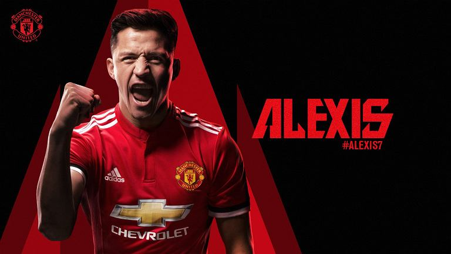
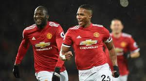

Nowy zawodnik!!
 Zarząd Manchesteru United z dumą zawiadomił, że udało się dopiąć szczegóły transferu Alexisa Sancheza. Prezentacja chilijskiego zawodnika odbędzie się za 2 dni.
Kliknij i zobaczKolejna kontuzja w zespole :/
 Na konferencji prasowej po dzisiejszym meczu Jose Mourinho z przykrością zawiadomił, że Marcos Rojo nie będzie zdolny do gry przez najbliższe 2 tygodnie.
Na konferencji prasowej po dzisiejszym meczu Jose Mourinho z przykrością zawiadomił, że Marcos Rojo nie będzie zdolny do gry przez najbliższe 2 tygodnie.
United w 1/4 LM!
 Dzisiejszego wieczoru na Old Trafford w meczu reważnowym United pokonali Sevillę 3:1 dzięki czemu przypieczętowali swój awans do ćwierćfinału ligi mistrzów.
Kliknij i zobaczZapowiedź meczu z Liverpoolem
 W sobotnie popołudnie ekipa Jose Mourinho podejmię drużynę Jurgena Kloppa.
W sobotnie popołudnie ekipa Jose Mourinho podejmię drużynę Jurgena Kloppa.